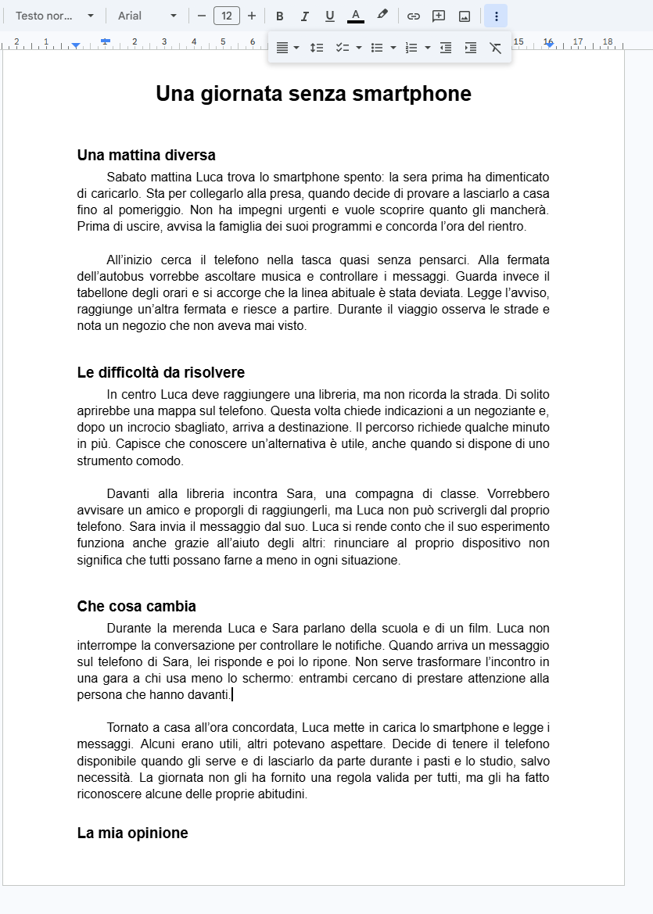

Da dove partiamo
Stesso testo, disposizioni diverse
Una prima riga spostata verso destra e un’intera pagina con bordi più ampi possono sembrare interventi simili. Quale impostazione cambia soltanto un paragrafo? Quale riguarda la pagina? Lo verificherai sul racconto.
Nella lezione 5 hai usato gli stili; nella lezione 6 hai regolato la leggibilità e revisionato la guida. Qui riprendi stili, interlinea e spazio dopo; impari a distinguere margini, rientri e allineamenti. La guida precedente resta un lavoro separato.
Prerequisiti: accedere con l’account scolastico, trovare la cartella della materia in Drive, selezionare testo e riconoscere Titolo, Intestazione 1 e Testo normale. Servono un portatile con connessione, il browser e il compito Classroom indicato dal docente.
Prendi il portatile assegnato, controlla la postazione e accedi agli strumenti scolastici. Segnala eventuali anomalie.
La consegna
Un racconto impaginato e la tua opinione
Crea un nuovo Documento Google chiamato Cognome_, nella cartella Tecnologie informatiche. Sostituisci Cognome e Nome con i tuoi. Inserisci il racconto fornito senza ricopiarlo a mano, applica le impostazioni dei passaggi e aggiungi “La mia opinione”.
- Saprai mostrare la differenza tra un margine della pagina e un rientro del paragrafo.
- Saprai confrontare sinistra e giustificato e controllare i valori effettivamente applicati.
- Consegnerai il documento completo con i sei paragrafi originali e un paragrafo personale di quattro o cinque frasi.
I valori richiesti servono a questo esercizio: non sono regole obbligatorie per tutti i documenti. Il testo può occupare più pagine: non ridurre caratteri o margini per farlo entrare in una sola.
Come dovrà apparire il documento

Puoi completare il lavoro seguendo le istruzioni scritte: titolo centrato, intestazioni a sinistra, corpo giustificato con la prima riga rientrata. I valori sono indicati qui sotto.
Il testo da impaginare
Il file di testo semplice, con estensione .txt, contiene il racconto senza impostazioni grafiche. Scegli uno dei due modi per prenderlo.
Scarica il testo da impaginare (.txt)
Apri il testo da copiare
Seleziona soltanto il racconto, dal titolo fino a “abitudini.”, e copialo. Non includere queste istruzioni.
Una giornata senza smartphone Una mattina diversa Sabato mattina Luca trova lo smartphone spento: la sera prima ha dimenticato di caricarlo. Sta per collegarlo alla presa, quando decide di provare a lasciarlo a casa fino al pomeriggio. Non ha impegni urgenti e vuole scoprire quanto gli mancherà. Prima di uscire, avvisa la famiglia dei suoi programmi e concorda l’ora del rientro. All’inizio cerca il telefono nella tasca quasi senza pensarci. Alla fermata dell’autobus vorrebbe ascoltare musica e controllare i messaggi. Guarda invece il tabellone degli orari e si accorge che la linea abituale è stata deviata. Legge l’avviso, raggiunge un’altra fermata e riesce a partire. Durante il viaggio osserva le strade e nota un negozio che non aveva mai visto. Le difficoltà da risolvere In centro Luca deve raggiungere una libreria, ma non ricorda la strada. Di solito aprirebbe una mappa sul telefono. Questa volta chiede indicazioni a un negoziante e, dopo un incrocio sbagliato, arriva a destinazione. Il percorso richiede qualche minuto in più. Capisce che conoscere un’alternativa è utile, anche quando si dispone di uno strumento comodo. Davanti alla libreria incontra Sara, una compagna di classe. Vorrebbero avvisare un amico e proporgli di raggiungerli, ma Luca non può scrivergli dal proprio telefono. Sara invia il messaggio dal suo. Luca si rende conto che il suo esperimento funziona anche grazie all’aiuto degli altri: rinunciare al proprio dispositivo non significa che tutti possano farne a meno in ogni situazione. Che cosa cambia Durante la merenda Luca e Sara parlano della scuola e di un film. Luca non interrompe la conversazione per controllare le notifiche. Quando arriva un messaggio sul telefono di Sara, lei risponde e poi lo ripone. Non serve trasformare l’incontro in una gara a chi usa meno lo schermo: entrambi cercano di prestare attenzione alla persona che hanno davanti. Tornato a casa all’ora concordata, Luca mette in carica lo smartphone e legge i messaggi. Alcuni erano utili, altri potevano aspettare. Decide di tenere il telefono disponibile quando gli serve e di lasciarlo da parte durante i pasti e lo studio, salvo necessità. La giornata non gli ha fornito una regola valida per tutti, ma gli ha fatto riconoscere alcune delle proprie abitudini.
Nel testo iniziale trovi un titolo, tre intestazioni e sei paragrafi di racconto: due sotto ogni intestazione. Le righe vuote facilitano la lettura del testo semplice; nel documento le eliminerai prima di regolare la spaziatura.
1. Crea il documento e inserisci il testo
- Parti dalla cartella.
In Drive apri
Tecnologie informatiche, poi Nuovo → Documenti Google → Documento vuoto. Se non trovi la cartella, chiedi aiuto prima di crearne un duplicato. - Rinomina il file.
Fai clic sul nome in alto e scrivi
Cognome_con i tuoi dati. Premi Invio. Non aggiungereNome_ Giornata_ senza_ smartphone .docxo.pdf. - Apri e copia il testo fornito.
Se hai scaricato il TXT, aprilo dai download del browser o dalla cartella Download: il doppio clic lo apre normalmente in un programma per testi semplici, per esempio Blocco note. Dentro quel file premi Ctrl + A, poi Ctrl + C. Se usi la sezione espandibile, seleziona solo il racconto e premi Ctrl + C; Ctrl + A sulla pagina selezionerebbe anche le istruzioni.
- Incolla senza formattazione.
Torna al documento vuoto e fai clic nell’area in cui scrivere. Su Windows premi Ctrl + Maiusc + V, oppure scegli Modifica → Incolla senza formattazione. Il contenuto arriva senza l’aspetto grafico della pagina di origine.
- Riconosci e separa i blocchi.
Individua il titolo, le tre intestazioni e i sei paragrafi. Elimina gli eventuali paragrafi vuoti importati: porta il cursore sulla riga vuota e premi una sola volta Backspace. Controlla dopo ogni eliminazione e usa Ctrl + Z se unisci due blocchi. Conserva un cambio di paragrafo tra ogni coppia di blocchi del racconto.
Richiamo: Invio crea un nuovo paragrafo; il ritorno a capo a fine riga è automatico. Non usare spazi, Tab o Invio ripetuti per centrare, rientrare o distanziare il testo.
Checkpoint 1: il file è nella cartella corretta e contiene dieci blocchi non vuoti: un titolo, tre intestazioni e sei paragrafi. Controlla accenti e apostrofi, senza cambiare il racconto.
2. Imposta la pagina e i margini
- Apri le impostazioni.
Scegli File → Impostazione pagina. Nella finestra seleziona Pagine, così il documento usa pagine di dimensioni definite.
- Scegli formato e orientamento.
In Formato carta scegli A4; per l’orientamento scegli Verticale.
- Inserisci i quattro margini.
Imposta superiore, inferiore, sinistro e destro a 2,5 cm. Se compare Applica a, scegli Documento intero. Conferma con OK, senza cambiare le impostazioni predefinite dei futuri documenti.
Queste impostazioni riguardano la pagina. Per spostare soltanto l’inizio di un paragrafo userai invece un rientro. Se i campi mostrano unità diverse dai centimetri, chiedi al docente prima di inserire i numeri.
Checkpoint 2: riapri Impostazione pagina e leggi i valori: Pagine, A4, Verticale, quattro margini di 2,5 cm.
3. Prepara il testo di base
- Seleziona tutto nel documento.
Fai clic nel testo, poi premi Ctrl + A. Nel selettore degli stili scegli Testo normale.
- Uniforma il punto di partenza.
Nella barra scegli Arial, dimensione 12 e Colore testo → nero. Disattiva eventuale grassetto e corsivo. In Formato → Allinea e applica rientro scegli Sinistro.
Per ora anche titolo e intestazioni sono Testo normale: assegnerai loro separatamente gli stili nel prossimo passaggio. Lo stile indica la funzione del testo; dimensione e grassetto ne modificano l’aspetto.
4. Distingui titolo e intestazioni
Lavora su un blocco alla volta. Seleziona il titolo o un’intestazione, applica prima lo stile dal selettore nella barra e poi regola l’aspetto secondo la tabella. Non usare il comando per aggiornare lo stile di tutti i paragrafi.
| Parte | Stile e aspetto | Spaziatura |
|---|---|---|
| Una giornata senza smartphone | Titolo; Arial 20; nero; grassetto; centrato. | Interlinea singola; prima 0 punti; dopo 12 punti. |
| Una mattina diversa Le difficoltà da risolvere Che cosa cambia | Intestazione 1 per ciascuna; Arial 14; nero; grassetto; a sinistra. | Interlinea singola; prima 12 punti; dopo 6 punti. |
- Regola l’allineamento.
Usa Formato → Allinea e applica rientro → Al centro per il titolo e Sinistro per ogni intestazione.
- Regola gli spazi.
In Formato → Interlinea e spaziatura paragrafo scegli Singola. Apri poi Spaziatura personalizzata, imposta lo spazio prima e dopo indicato in tabella e premi Applica.
- Lascia titolo e intestazioni senza rientri.
In Formato → Allinea e applica rientro → Opzioni per il rientro imposta sinistro e destro a 0 cm e, nella sezione del rientro speciale, scegli Nessuno, poi Applica. Il rientro della prima riga servirà solo al corpo del racconto.
Checkpoint 3: fai clic nel titolo e poi nelle tre intestazioni: il selettore deve mostrare davvero Titolo oppure Intestazione 1. Una scritta grande e in grassetto può essere ancora Testo normale.
5. Confronta sinistra e giustificato
Il corpo del racconto comprende i sei paragrafi, escludendo titolo e intestazioni. Parti dal primo, che comincia con “Sabato mattina Luca”.
- Osserva a sinistra.
Fai clic nel primo paragrafo e scegli Formato → Allinea e applica rientro → Sinistro. Osserva l’inizio regolare delle righe e il bordo destro irregolare.
- Prova il giustificato.
Nello stesso menu scegli Giustificato. Confronta il bordo destro, gli spazi tra le parole e l’ultima riga. Il contenuto è rimasto lo stesso?
- Applica la richiesta dell’esercizio.
Imposta Giustificato su ciascuno dei sei paragrafi. Puoi lavorare uno alla volta: posiziona il cursore nel paragrafo prima di scegliere il comando. Conserva titolo centrato e intestazioni a sinistra.
Il giustificato non è una regola universale: l’allineamento a sinistra può essere altrettanto appropriato e può evitare spazi troppo ampi tra le parole. Qui usi il giustificato per osservarne il comportamento; nella guida precedente hai usato la sinistra.
Checkpoint 4: indica un effetto del giustificato e controlla che l’ultima riga non sia stata allargata con spazi inseriti a mano.
6. Fai rientrare soltanto la prima riga
Con rientro sinistro e destro a zero, il paragrafo usa tutta la larghezza disponibile tra i margini. Aggiungendo una prima riga di 1 cm, solo quella riga parte 1 cm più all’interno. I margini della pagina restano di 2,5 cm.
- Prova sul primo paragrafo.
Posiziona il cursore al suo interno. Apri Formato → Allinea e applica rientro → Opzioni per il rientro.
- Inserisci i valori numerici.
Imposta rientro sinistro 0 cm, destro 0 cm; nella sezione Speciale del rientro scegli Prima riga e inserisci 1 cm. Premi Applica.
- Controlla e ripeti.
La prima riga parte più a destra, le successive tornano al margine sinistro. Riapri le opzioni per verificare i valori; poi applicali agli altri cinque paragrafi. Non selezionare titolo e intestazioni.
Checkpoint 5: mostra due paragrafi con prima riga a 1 cm e spiega perché il margine sinistro non è diventato 1 cm. Non usare Tab o spazi per ottenere il rientro.
Richiamo operativo
7. Regola interlinea e spazio tra i paragrafi
L’interlinea regola la distanza fra righe dello stesso paragrafo; lo spazio prima o dopo separa i paragrafi. Sono le due impostazioni già usate nella lezione 6.
- Controlla che non ci siano paragrafi vuoti.
Elimina solo quelli usati per distanziare i blocchi, come nel passaggio 1. Non cancellare il cambio di paragrafo che separa due parti del racconto.
- Regola il corpo.
Su ciascuno dei sei paragrafi scegli Formato → Interlinea e spaziatura paragrafo → 1,5. Apri Spaziatura personalizzata nello stesso menu: spazio prima 0 punti, dopo 6 punti, poi Applica. Se la finestra mostra anche l’interlinea, mantieni 1,5.
Checkpoint 6: un paragrafo del corpo deve avere Testo normale, Arial 12, nero, senza grassetto, giustificato; rientri sinistro e destro 0 cm, prima riga 1 cm; interlinea 1,5, prima 0 e dopo 6 punti. Titolo e intestazioni mantengono le impostazioni del passaggio 4.
Se cambi anche l’intestazione o perdi un’impostazione
Usa Ctrl + Z e controlla dove si trova il cursore o quale testo è selezionato. Riparti da un solo paragrafo campione: verifica stile, allineamento, rientri e spaziatura prima di passare al successivo. Non selezionare tutto il documento per applicare le impostazioni del corpo.
8. Aggiungi “La mia opinione”
- Aggiungi l’intestazione.
Dopo l’ultimo paragrafo premi Invio e scrivi La mia opinione. Applica Intestazione 1 e tutte le impostazioni delle altre intestazioni: Arial 14, nero, grassetto, sinistra, interlinea singola, prima 12 e dopo 6 punti, nessun rientro.
- Scrivi un paragrafo personale.
Premi Invio, scegli Testo normale e scrivi quattro o cinque frasi collegate. Puoi ragionare su quando il telefono è utile, in quali occasioni lasciarlo da parte e su quali scelte di Luca condividi o cambieresti. Non servono informazioni private su di te o su altre persone.
- Applica le impostazioni del corpo.
Usa Arial 12, nero, senza grassetto, giustificato; sinistro e destro 0 cm, Prima riga 1 cm; interlinea 1,5, prima 0 e dopo 6 punti. Controllale anche se il nuovo paragrafo sembra averle ereditate.
Checkpoint 7: ora il documento contiene un titolo, quattro intestazioni e sette paragrafi di corpo: sei del racconto e uno personale. I sei originali sono rimasti completi e nello stesso ordine.
9. Controlla con un compagno e consegna
Lavorate affiancati, ciascuno sul proprio documento. Leggete una voce alla volta e rispondete sì / da correggere, poi invertite i ruoli. Riaprite i menu per leggere i valori effettivi: non basta guardare l’aspetto.
- Nome e cartella: il file ha il nome richiesto ed è in Tecnologie informatiche?
- Pagina: Pagine, A4 verticale e quattro margini di 2,5 cm?
- Stili: il selettore conferma Titolo, quattro Intestazione 1 e Testo normale per il corpo?
- Titolo e intestazioni: Arial 20 e 14, nero, grassetto, allineamenti e spaziatura del passaggio 4, senza rientri?
- Testo originale: i sei paragrafi sono completi, nello stesso ordine e senza aggiunte o omissioni?
- Corpo: Arial 12 nero, senza grassetto e giustificato; rientri sinistro e destro 0 cm, prima riga 1 cm?
- Spaziatura: interlinea 1,5, prima 0 e dopo 6 punti; nessun paragrafo vuoto usato per distanziare?
- Conclusione: “La mia opinione” e un solo paragrafo di quattro o cinque frasi, con le impostazioni del corpo?
- Integrità: nessuna parola spostata con spazi o Tab e nessuna riduzione arbitraria per comprimere tutto in una pagina?
- Verifica il salvataggio.
Vicino al nome controlla che le modifiche risultino salvate in Drive. Torna alla cartella e riapri il documento per ritrovare le ultime correzioni. Se manca la connessione o compare un errore, lascia aperto il file e avvisa il docente.
- Apri il compito indicato.
In Classroom scegli il corso → Lavori del corso → compito → Visualizza istruzioni.
- Allega il Documento Google esistente.
In Il tuo lavoro scegli Aggiungi o crea → Google Drive, seleziona il documento del racconto e premi Aggiungi. Se è già allegato, aprilo e controllalo senza aggiungerlo una seconda volta. Consegni il Documento Google: non esportare e non allegare il TXT iniziale.
- Consegna e verifica lo stato.
Apri l’allegato: deve contenere racconto e conclusione completi. Torna al compito, premi Consegna e conferma. Controlla lo stato Consegnato. Se i comandi sono diversi, chiedi al docente prima di procedere.
Se termini prima — confronta una copia a sinistra
Con l’originale salvato, scegli File → Crea una copia. Mantieni la cartella della materia e aggiungi al nome il suffisso Confronto a sinistra. Nella copia cambia soltanto l’allineamento dei sette paragrafi del corpo da giustificato a sinistra. Confronta bordi, spazi fra parole e facilità di lettura; conserva gli altri valori. Il documento da consegnare resta l’originale.
10. Spiega che cosa hai impostato
I margini delimitano l’area del testo sulla pagina; i rientri agiscono sui paragrafi. Sinistra e giustificato distribuiscono le righe in modo diverso. Interlinea e spazio dopo regolano due distanze diverse. Gli stili restano verificabili dal selettore.
- Quale impostazione cambia lo spazio dal bordo della pagina? Quale sposta solo la prima riga?
- Che cosa cambia aumentando l’interlinea? E aumentando lo spazio dopo il paragrafo?
- Quando devi premere Invio e quando devi lasciare che il programma vada a capo da solo?
- Come dimostri che “La mia opinione” è davvero Intestazione 1?
Dopo la consegna, esci dagli account secondo la procedura del laboratorio, spegni e riponi il portatile nel posto assegnato seguendo le indicazioni per la ricarica.
Guide dei comandi
Riferimenti ufficiali Google per la versione per computer: impostazioni della pagina, formato con pagine, allineamento e spaziatura, opzioni di rientro, titoli e intestazioni, scorciatoie da tastiera, consegna in Classroom.
La guida sui rientri descrive anche il rientro sporgente, che qui non usiamo: per questo esercizio scegli Prima riga. Le etichette possono variare con la versione e la lingua dell’interfaccia; se non trovi un comando, chiedi di individuarlo per nome.